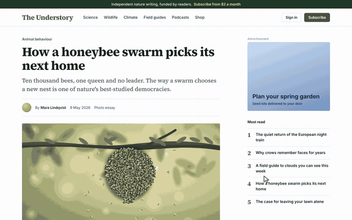

A copier light scans down the page and redraws it as a cyanotype. Every box gets an outline, the main blocks get dimension lines, headings get their type spec and a title block goes in the corner. Hover to measure, click to pin, press S to save the whole page as one PNG sheet. Esc scans the original back in.
Drag the dashed button to your bookmarks bar, then click it on any website. Or try it on a magazine page.

Anything with a fill, a border or a shadow is outlined in white ink by a pen that follows the light down the screen. Pictures, videos and canvases are printed like cyanotypes and crossed, with their size.
Header, nav, main, aside, footer and the other layout containers become dashed lines with their name in the margin. Center lines run along the edges of the main columns.
The biggest distinct blocks get dimension lines with arrows and pixel values. Headings get a note with their font, weight, size and line height.
Hover any element to see its margin and padding hatched, its size and its font. Click to pin it, then hover another element: the gap between them is measured, the way design tools do it.
Press S for a PNG of the whole page: outlines, dimensions and every word in the page's own fonts, with a title block underneath.
One adopted stylesheet and a canvas on top. No attributes, classes or inline styles are added to the page, so Esc brings it back exactly as it was.
Chrome, Edge, Safari, Firefox, Arc, Brave
Chrome, Edge, Brave, Arc
chrome://extensions, switch on Developer mode, click Load unpacked and pick the extension folder.Any browser with DevTools
blueprint.min.js into the console and press Enter.Tampermonkey or Violentmonkey
| Hover | Measure the element under the cursor: margin, padding, size and font |
|---|---|
| Click | Pin the measurement. Hover another element to see the gap |
| S | Save the whole page as a PNG sheet |
| G | Grid on or off |
| D | Dimension lines on or off |
| P | Clear the pins |
| Esc | Scan the original back in and switch off |